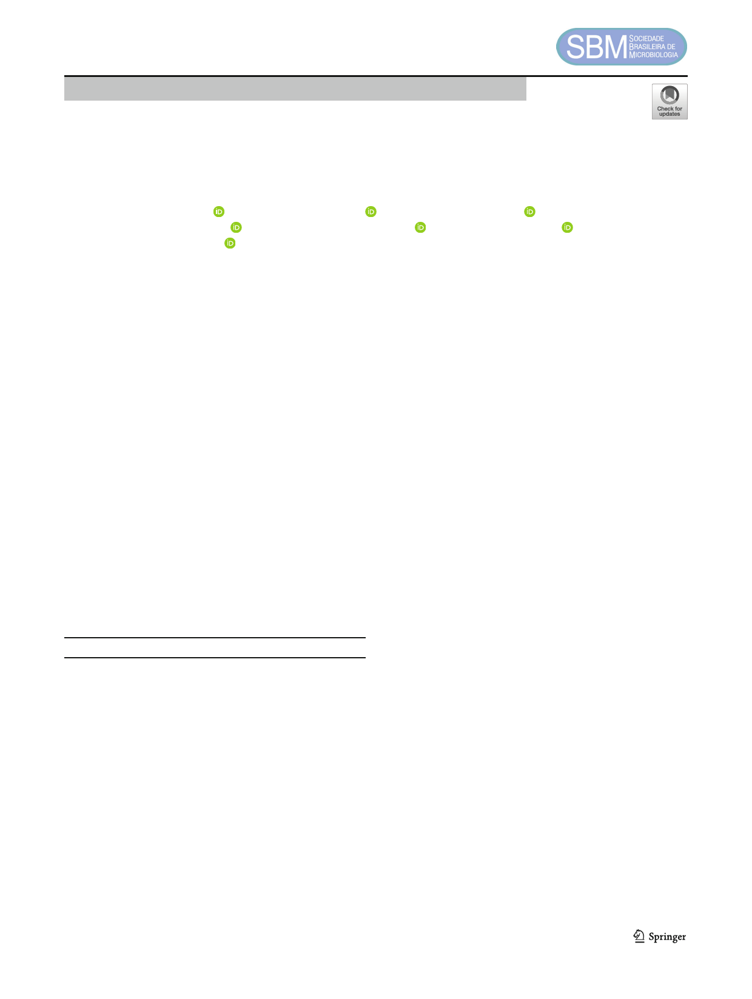

Brazilian Journal of Microbiology (2021) 52:619–625
https://doi.org/10.1007/s42770-021-00455-w
CLINICAL MICROBIOLOGY - RESEARCH PAPER
Antimicrobial effect of gold nanoparticles in the formation
of the Staphylococcus aureus biofilm on a polyethylene surface
Lorena Dafnee Villa-García1 & Raúl Márquez-Preciado1 & Marine Ortiz-Magdaleno2 &
Olga Araceli Patrón-Soberano3 & Marco Antonio Álvarez-Pérez4 & Amaury Pozos-Guillén2 &
Luis Octavio Sánchez-Vargas5
Received: 21 September 2020 / Accepted: 6 February 2021 / Published online: 22 February 2021
# Sociedade Brasileira de Microbiologia 2021
Abstract
The main of this study was to evaluate the inhibitory effect on the in vitro formation of the Staphylococcus aureus biofilm formed
on a polyethylene (PE) surface with a nanostructured Gold (Au) coating for medical devices. An experimental in vitro study was
carried out using PE discs with an Au nanoparticle coating (AuNPs) on one side (experimental group) and without coating on the
other (control group); the discs were mounted in the CDC biofilm reactor adding broth of yeast-dextrose-peptone (YPD) sterile
culture inoculated with S. aureus in a cell suspension (5 × 108 cells/ml). The specimens were evaluated at different times (6, 12,
24, 48, 72 h) and stained with the Live/Dead Bacterial Viability Kit (Invitrogen) for observation, analysis, and quantification with
confocal laser scanning microscopy (CLSM) and scanning electron microscopy (SEM). The results showed that as evaluation
time passed an increasing of S. aureus biofilm formation was observed in the control group, in the experimental group, a
statistically significant biofilm inhibition was observed with respect to the AuNPs uncoated specimens (p ≤ 0.05) and showed
a ratio of almost 4:1 viable/nonviable in the biofilm of the uncoated surfaces, with a difference > 5 Log10 in the CFU counts. The
PE with AuNP coating showed an inhibitory effect on the biofilm formation of S. aureus.
Keywords Polyethylene, . Biofilm, . Staphylococcus aureus, . Gold nanoparticles, . Biofilm reactor
Responsible Editor: Fernando R. Pavan.
* Luis Octavio Sánchez-Vargas
1 Paediatric Dentistry Postgraduate Program, Faculty of Stomatology,
Universidad Autónoma de San Luis Potosí, San Luis Potosí, SLP,
Mexico
2 Basic Science Laboratory, Faculty of Stomatology, Universidad
Autónoma de San Luis Potosí, San Luis Potosí, SLP, Mexico
3 Molecular Biology Division, Instituto Potosino de Investigación
Científica y Tecnológica, San Luis Potosí, SLP, México
4 Tissue Bioengineering Laboratory, Faculty of Stomatology.
Postgraduate and Research Division, Universidad Nacional
Autónoma de México, Mexico City, Mexico
5 Biochemical and Microbiology Laboratory, Faculty of Stomatology,
Universidad Autónoma de San Luis Potosí, Av. Dr. Manuel Nava #2,
Zona Universitaria, 78290, San Luis Potosí, SLP, Mexico
Introduction
Infections associated with biomaterials used in the human
body have a low incidence; however, when they happen, this
represents a serious complication with high mortality rates.
Among the materials implanted daily with biomedical pur-
poses in the medical and dental area, we find various biocom-
patible materials that can have a natural or synthetic origin,
and the most used are polymers, which have multiple uses in
these areas and are essential for these materials that they do
not allow colonization of pathogenic microorganisms and
cause an infection in the patient [1].
A highly used polymeric material is high-density polyeth-
ylene (PE) due to its dimensional stability against high steril-
ization temperatures. Its applications range from surgical in-
struments to temporary and permanent biomedical devices,
such as catheters, sutures, and implants for facial and cranial
reconstructions [2, 3]. The coating and characterization of
biomedical materials surface with nanoparticles makes it pos-
sible to inhibit the growth of bacterial biofilm and has been
continuously investigated. Gold (Au) is a noble metal used in